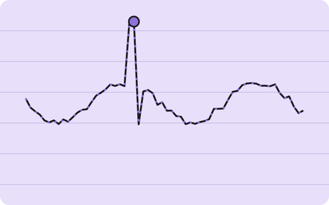
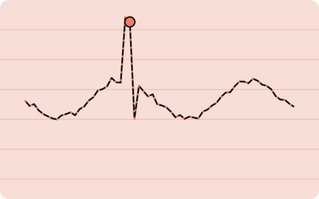
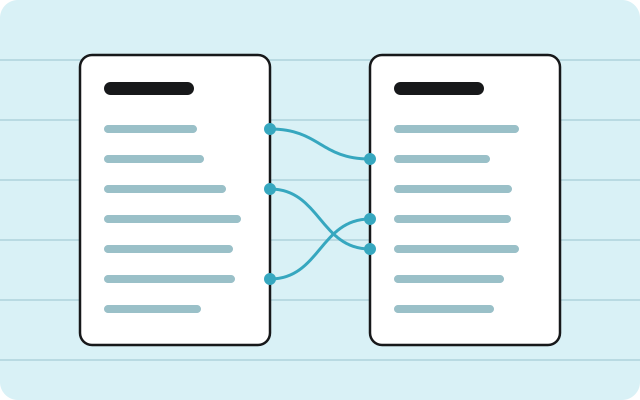

Huiguo Liu · Data & business analytics
Hey there, I’m Huiguo
Welcome to my project notebook 📓 — client analyses, predictive models, and GenAI tools, each written up as a case study with the question, the data, the method, and what changed.
Currently looking for data analyst and business analytics roles where careful data work changes what a team does next.
Economics taught me to ask what drives a number. Analytics lets me test it.
I care most about the step between a correct model and a usable decision: start from the action, pick a method the evidence can support, and say plainly what the numbers can and cannot tell you.
Over the last year I worked as an analytics consultant for three clients through the Carlson Analytics Lab, competed on Kaggle, and built a set of LLM tools — from a résumé copilot to a multi-agent newsroom.
Selected work
A few pages worth starting with.
Each case study follows the same path — question, data, method, result, decision — so you can skim one or read them all.

Do the signals actually predict anything?
Crypto AI Radar · An honest research pipeline for BTC, ETH and SOL hourly signals

Snap a plate, see the calories
SnapCal · A Cal AI–style photo calorie tracker built on Claude vision

Tailor a résumé without inventing anything
MSBA 6511 Gen AI · RAG copilot for résumé–job fit scoring and grounded edits

Find the creators keyword search missed
LLM Business Application course · creator recommendation system on yes& data